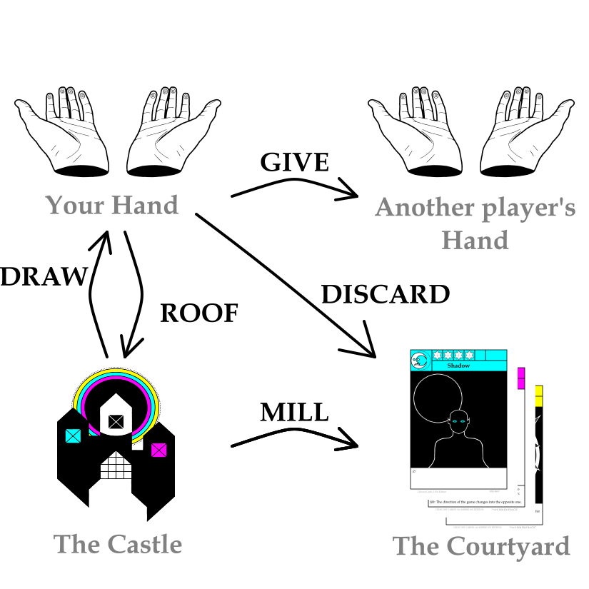

HOW TO PLAY CELECAST
THE START OF THE GAME
BEFORE THE START OF THE GAME
Celecast is a game for 2, 3 or 4 players.
The average gameplay time is less than 30 minutes.
It is not recommended for children under the age of 12.
AT THE START OF THE GAME
At the start of the game:
- The Castle (the deck of cards) is thoroughly shuffled.
- An equal starting number of cards is dealt to each player.
- The player who will take the first turn is determined.
- The starting direction of the game is established.
THE STARTING NUMBER OF CARDS
The number of cards each player starts with depends on the total number of players.
It is defined by the formula:
the starting number of cards in players' Hands = 24 / the starting number of players
So, the starting number of cards in players' Hands:
- For 2 players is 12 cards.
- For 3 players is 8 cards.
- For 4 players is 6 cards.
THE FIRST TURN
The player who takes the first turn can be any player.
It is recommended that the starting player is the oldest player or the player who won the previous game.
THE DIRECTION OF THE GAME
The initial direction of the game can be either clockwise or counterclockwise, as it is decided.
The direction of the game can be changed by card effects.
THE GAME
“YOUR TURN!”
Celecast is played so that each player plays exactly one card on their turn.
When a card is played:
- It is placed on top of the Courtyard.
- The ordinary part of its effect is triggered and unwinds.
Namely, it is possible to trigger the special part of a card's effect under specific conditions.
(read more about that in the chapter "SPECIAL SYMBOLS § AND @").
THE UNWINDING OF CARD EFFECTS
The triggered part of a card's effect unwinds for the player who triggered it.
If a card's effect applies to multiple players, its unwinding begins from player who triggered it and then continues to other players in the direction of the game.
THE END OF THE GAME
THE AIM OF THE GAME
The aim of the game is to be the last player remaining.
At the end of each turn, players with empty Hands leave the game.
NOTE: Players do not leave the game at the moment when they run out of cards but instead at the very end of the turn, after all the triggered card effects have unwound.
Card effects do not affect players who have left the game.
When a player leaves the game, there is no return for them.
THE WINNER!
If, at the end of the turn, only one player remains with one or more cards, the game ends, and that player is the winner!
If, at the end of the turn, all players have run out of cards, players leave the game starting from the player whose turn it was and then they continue leaving in the game's direction.
The game ends, and the last player to leave is the winner!
There is always a winner and only one winner.
IN MORE DETAIL
PILES OF CARDS
THE CASTLE
The deck of cards is known as the Castle.
The Castle is a secret pile of cards, always facing down.
No player may look at the cards within it.
At the very start of the game, before players are dealt cards, the Castle contains all 96 cards.
THE HANDS
Cards belonging to a player are in their Hand.
A Hand is a private pile of cards, facing the player holding it; no other player may look at the cards within it.
The number of Hands is equal to the number of players.
Players may inquire about the number of cards in other players' Hands.
Before players are dealt cards, their Hands are empty.
THE COURTYARD
The pile of played, discarded and milled cards is referred to as the Courtyard.
The Courtyard is a public pile of cards, always face-up.
All players may look at the cards within it.
At the game's beginning, before the first card is played, the Courtyard contains no cards, it is an empty pile.
CARDS
CARD FACE
Every card has a sign, a rarity, a name, an image and an effect.
There are a total of 18 cards, 12 of which come in multiple copies and 6 of which are actually unique.
SUN, MOON & STAR CARDS
Three signs exist.
Each card belongs to one sign:
- Sun cards bear THE SUN sign.
- Moon cards bear THE MOON sign.
- Star cards bear THE STAR sign.
- Sun cards are yellow.
- Moon cards are light-blue.
- Star cards are purple.
RARITIES
There are five rarities: 1, 2, 3, 4 and 5.
The rarity of a card is determined by counting the stars above its name.
It indicates the total number of its copies:
- Cards of rarity 1 come in 16 copies.
- Cards of rarity 2 come in 8 copies.
- Cards of rarity 3 come in 4 copies.
- Cards of rarity 4 come in only 2 copies.
- Cards of rarity 5 come in 1 unique copy.

KEYWORDS: DRAW, DISCARD, MILL, ROOF & GIVE
Keywords appear in card effects.
They describe card movements between different card piles:
- To DRAW a card means to move a card from the top of the Castle into your Hand.
- To DISCARD a card means to move a card from your Hand onto the top of the Courtyard.
- To MILL a card means to move a card from the top of the Castle onto the top of the Courtyard.
- To ROOF a card means to move a card from your Hand onto the top of the Castle.
- To GIVE a card means to move a card from your Hand into another player's Hand.
All card movements are done secretly, with cards facing down.

SPECIAL SYMBOLS § AND @
Some cards have a special part of their effect, that does not get triggered and does not unwind when the card is played but rather only under certain conditions.
A special part of a card effect is marked by a special symbol defining its trigger condition:
- § means “If you DISCARD this card: ”
- @ means “If you MILL this card: ”